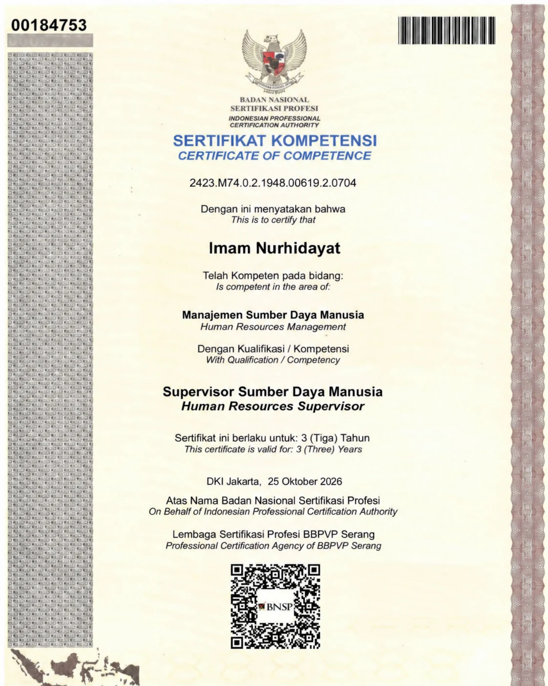
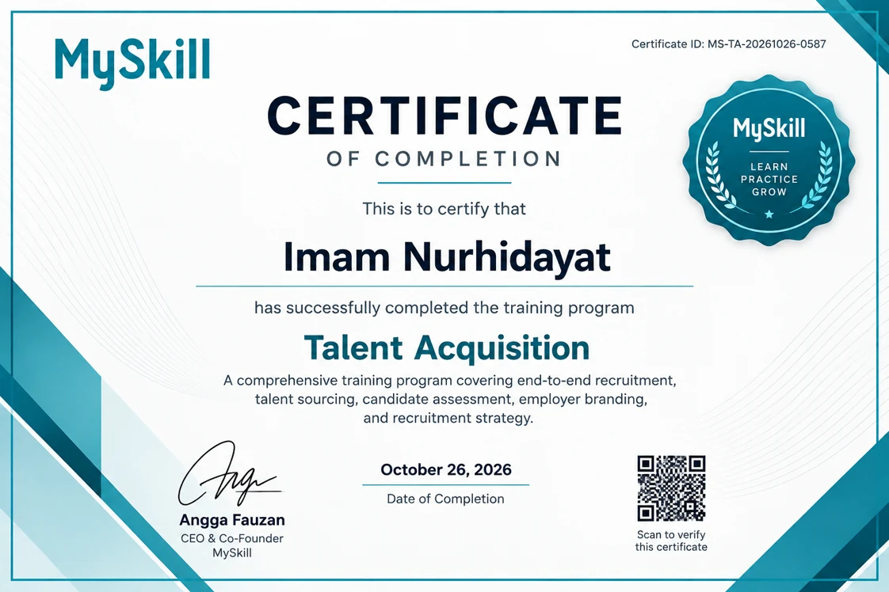
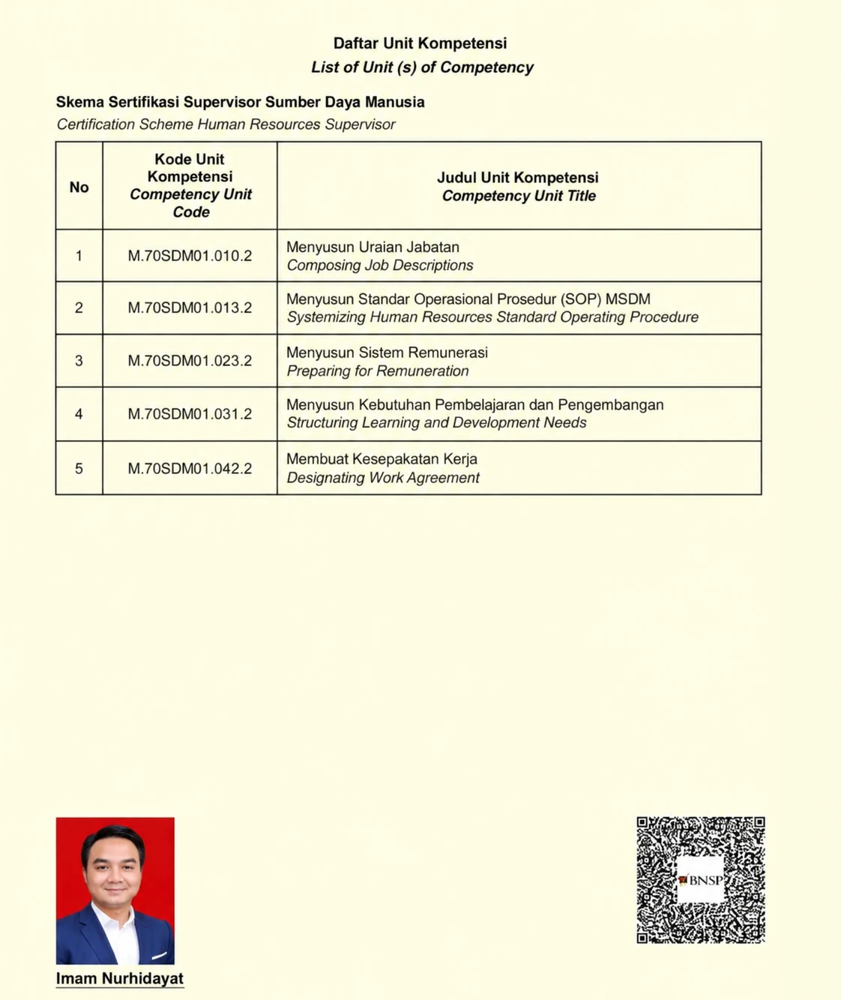

BNSP
Manager Sumber Daya Manusia
Sertifikat kompetensi ini diterbitkan pada 25 Oktober 2026 oleh Lembaga Sertifikasi Profesi BBPVP Serang dan berlaku selama tiga tahun.
Halo, saya
Saya menghubungkan kebutuhan bisnis dengan talenta yang tepat melalui proses rekrutmen yang transparan dan perencanaan tenaga kerja berbasis data.
PENGEMBANGAN PROFESIONAL
Dokumentasi pembelajaran profesional dan kompetensi dalam bidang akuisisi talenta serta manajemen sumber daya manusia.

Sertifikat kompetensi ini diterbitkan pada 25 Oktober 2026 oleh Lembaga Sertifikasi Profesi BBPVP Serang dan berlaku selama tiga tahun.

Pelatihan diselesaikan pada 26 Oktober 2026. Program ini mencakup proses rekrutmen menyeluruh, pencarian talenta, penilaian kandidat, pencitraan perusahaan sebagai pemberi kerja, dan strategi rekrutmen. Nomor sertifikat: MS TA 20261026 0587.

Dokumen pendukung ini mencantumkan lima unit kompetensi, yaitu menyusun uraian jabatan, menyusun prosedur operasional standar sumber daya manusia, menyiapkan sistem remunerasi, merumuskan kebutuhan pembelajaran dan pengembangan, serta menyusun kesepakatan kerja.
Geser untuk Melihat Setiap Sertifikat
BIDANG KEAHLIAN
Merancang proses rekrutmen yang andal untuk mendukung pengembangan talenta dan organisasi.
Menyelaraskan kebutuhan tenaga kerja, jumlah karyawan yang telah disetujui, dan prioritas bisnis di seluruh departemen.
Mengelola pencarian dan penyaringan kandidat, wawancara, koordinasi seleksi, serta komunikasi dengan kandidat.
Menggunakan pertanyaan terstruktur, matriks kompetensi, dan lembar penilaian untuk mendukung proses pengambilan keputusan.
Memantau waktu pemenuhan lowongan, lama waktu lowongan belum terisi, jumlah perekrutan, dan efektivitas kanal pencarian kandidat.
Meningkatkan visibilitas perusahaan melalui komunikasi proposisi nilai pemberi kerja, kampanye rekrutmen, dan kemitraan strategis.
Mendukung pengelolaan dokumen karyawan, data sistem informasi SDM, orientasi keselamatan kerja, dan proses orientasi karyawan baru.
Geser untuk Melihat Seluruh Kartu
TENTANG SAYA
Saya Imam Nur Hidayat, profesional akuisisi talenta dengan pengalaman di sektor perhotelan dan manufaktur.
Pekerjaan saya mencakup perencanaan tenaga kerja, strategi pencarian kandidat, asesmen terstruktur, kolaborasi dengan para pemangku kepentingan, dan pelaporan rekrutmen. Saya mengutamakan komunikasi yang jelas, proses yang konsisten, serta praktik rekrutmen yang menghargai waktu dan potensi setiap individu.
Dengan latar belakang Komunikasi Strategis, saya menerapkan pendekatan yang berorientasi pada manusia untuk menyelaraskan kebutuhan bisnis dengan talenta, serta memanfaatkan data guna mengidentifikasi peluang perbaikan proses rekrutmen.
PERJALANAN PROFESIONAL
Pengalaman dalam rekrutmen, operasional sumber daya manusia, dan bidang komersial di berbagai lingkungan bisnis.
Hotel Salak The Heritage Bogor
Hotel bersejarah di Bogor yang memiliki 142 kamar dan 13 fasilitas MICE.
Hotel Salak The Heritage Bogor
REHAU South East Asia
Indikator dan target ditampilkan sesuai dengan informasi yang tercantum dalam CV yang diberikan.
PEMBELAJARAN DAN PENGEMBANGAN
Landasan dalam bidang komunikasi, pemahaman terhadap manusia, dan cara organisasi membangun hubungan yang bermakna.
Pancasila University
PERANGKAT DAN METODE KERJA
Kombinasi sistem rekrutmen, metode penilaian, kemampuan interpersonal, dan disiplin operasional yang mendukung pelaksanaan pekerjaan secara efektif.
Sistem Rekrutmen dan SDM
Hubungan Interpersonal dan Kolaborasi
PELAJARI & JELAJAHI
Jelajahi 50 pertanyaan mendalam tentang strategi rekrutmen, AI, analitik, asesmen, dan lainnya.
MARI MENJALIN KONEKSI PROFESIONAL
Apakah Anda memiliki peluang rekrutmen, gagasan kolaborasi, atau posisi yang sesuai dengan pengalaman saya? Saya terbuka untuk berdiskusi dan menjalin kolaborasi.